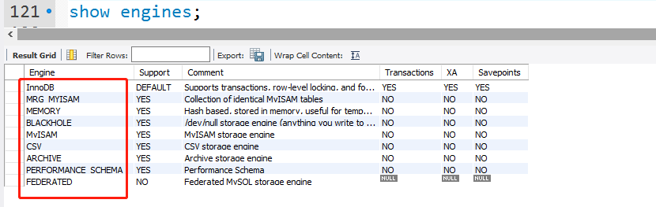
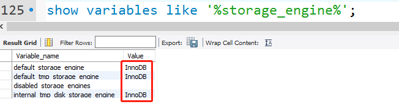

Mysql数据库引擎
前言
数据库存储引擎是数据库底层软件组织，数据库管理系统（DBMS）使用数据引擎进行创建、查询、更新和删除数据。不同的存储引擎提供不同的存储机制、索引技巧、锁定水平等功能，使用不同的存储引擎，还可以 获得特定的功能。现在许多不同的数据库管理系统都支持多种不同的数据引擎。MySql的核心就是存储引擎。
存储引擎的查看
MySQL给开发者提供了查询存储引擎的功能，我这里使用的是MySQL5.1，可以使用：
show engines;

看到MySQL给用户提供了这么多存储引擎，包括处理事务安全表的引擎和出来了非事物安全表的引擎。
如果要想查看数据库默认使用哪个引擎，可以通过使用命令：
show variables like '%storage_engine%';

在MySQL中，不需要在整个服务器中使用同一种存储引擎，针对具体的要求，可以对每一个表使用不同的存储引擎。Support列的值表示某种引擎是否能使用：YES表示可以使用、NO表示不能使用、DEFAULT表示该引擎为当前默认的存储引擎 。下面来看一下其中几种常用的引擎。
InnoDB存储引擎
InnoDB是事务型数据库的首选引擎，支持事务安全表（ACID），支持行锁定和外键，上图也看到了，InnoDB是默认的MySQL引擎。InnoDB主要特性有：
1、InnoDB给MySQL提供了具有提交、回滚和崩溃恢复能力的事物安全（ACID兼容）存储引擎。InnoDB锁定在行级并且也在SELECT语句中提供一个类似Oracle的非锁定读。这些功能增加了多用户部署和性能。在SQL查询中，可以自由地将InnoDB类型的表和其他MySQL的表类型混合起来，甚至在同一个查询中也可以混合
2、InnoDB是为处理巨大数据量的最大性能设计。它的CPU效率可能是任何其他基于磁盘的关系型数据库引擎锁不能匹敌的
3、InnoDB存储引擎完全与MySQL服务器整合，InnoDB存储引擎为在主内存中缓存数据和索引而维持它自己的缓冲池。InnoDB将它的表和索引在一个逻辑表空间中，表空间可以包含数个文件（或原始磁盘文件）。这与MyISAM表不同，比如在MyISAM表中每个表被存放在分离的文件中。InnoDB表可以是任何尺寸，即使在文件尺寸被限制为2GB的操作系统上
4、InnoDB支持外键完整性约束，存储表中的数据时，每张表的存储都按主键顺序存放，如果没有显示在表定义时指定主键，InnoDB会为每一行生成一个6字节的ROWID，并以此作为主键
5、InnoDB被用在众多需要高性能的大型数据库站点上
InnoDB不创建目录，使用InnoDB时，MySQL将在MySQL数据目录下创建一个名为ibdata1的10MB大小的自动扩展数据文件，以及两个名为ib_logfile0和ib_logfile1的5MB大小的日志文件
MyISAM存储引擎
MyISAM基于ISAM存储引擎，并对其进行扩展。它是在Web、数据仓储和其他应用环境下最常使用的存储引擎之一。MyISAM拥有较高的插入、查询速度，但不支持事物。MyISAM主要特性有：
1、大文件（达到63位文件长度）在支持大文件的文件系统和操作系统上被支持
2、当把删除和更新及插入操作混合使用的时候，动态尺寸的行产生更少碎片。这要通过合并相邻被删除的块，以及若下一个块被删除，就扩展到下一块自动完成
3、每个MyISAM表最大索引数是64，这可以通过重新编译来改变。每个索引最大的列数是16
4、最大的键长度是1000字节，这也可以通过编译来改变，对于键长度超过250字节的情况，一个超过1024字节的键将被用上
5、BLOB和TEXT列可以被索引
6、NULL被允许在索引的列中，这个值占每个键的0~1个字节
7、所有数字键值以高字节优先被存储以允许一个更高的索引压缩
8、每个MyISAM类型的表都有一个AUTO_INCREMENT的内部列，当INSERT和UPDATE操作的时候该列被更新，同时AUTO_INCREMENT列将被刷新。所以说，MyISAM类型表的AUTO_INCREMENT列更新比InnoDB类型的AUTO_INCREMENT更快
9、可以把数据文件和索引文件放在不同目录
10、每个字符列可以有不同的字符集
11、有VARCHAR的表可以固定或动态记录长度
12、VARCHAR和CHAR列可以多达64KB
使用MyISAM引擎创建数据库，将产生3个文件。文件的名字以表名字开始，扩展名之处文件类型：frm文件存储表定义、数据文件的扩展名为.MYD（MYData）、索引文件的扩展名时.MYI（MYIndex）
MEMORY存储引擎
MEMORY存储引擎将表中的数据存储到内存中，未查询和引用其他表数据提供快速访问。MEMORY主要特性有：
1、MEMORY表的每个表可以有多达32个索引，每个索引16列，以及500字节的最大键长度
2、MEMORY存储引擎执行HASH和BTREE缩影
3、可以在一个MEMORY表中有非唯一键值
4、MEMORY表使用一个固定的记录长度格式
5、MEMORY不支持BLOB或TEXT列
6、MEMORY支持AUTO_INCREMENT列和对可包含NULL值的列的索引
7、MEMORY表在所由客户端之间共享（就像其他任何非TEMPORARY表）
8、MEMORY表内存被存储在内存中，内存是MEMORY表和服务器在查询处理时的空闲中，创建的内部表共享
9、当不再需要MEMORY表的内容时，要释放被MEMORY表使用的内存，应该执行DELETE FROM或TRUNCATE TABLE，或者删除整个表（使用DROP TABLE）
存储引擎的选择
不同的存储引擎都有各自的特点，以适应不同的需求，如下表所示：
| 功 能 | MYISAM | Memory | InnoDB | Archive |
|---|---|---|---|---|
| 存储限制 | 256TB | RAM | 64TB | None |
| 支持事物 | No | No | Yes | No |
| 支持全文索引 | Yes | No | No | No |
| 支持数索引 | Yes | Yes | Yes | No |
| 支持哈希索引 | No | Yes | No | No |
| 支持数据缓存 | No | N/A | Yes | No |
| 支持外键 | No | No | Yes | No |
总结
如果要提供提交、回滚、崩溃恢复能力的事物安全（ACID兼容）能力，并要求实现并发控制，InnoDB是一个好的选择
如果数据表主要用来插入和查询记录，则MyISAM引擎能提供较高的处理效率
如果只是临时存放数据，数据量不大，并且不需要较高的数据安全性，可以选择将数据保存在内存中的Memory引擎，MySQL中使用该引擎作为临时表，存放查询的中间结果
如果只有INSERT和SELECT操作，可以选择Archive，Archive支持高并发的插入操作，但是本身不是事务安全的。Archive非常适合存储归档数据，如记录日志信息可以使用Archive
使用哪一种引擎需要灵活选择，一个数据库中多个表可以使用不同引擎以满足各种性能和实际需求，使用合适的存储引擎，将会提高整个数据库的性能